Mercury transforms into methylmercury, through the action of marine anaerobic microbes.

Its toxicity magnifies as it ascends the food chain.
This project aims to combat methylmercury poisoning, by targeting both waterborne mercury and methylmercury accumulated in fish.
Breaking bond proposes a SynBio solution - genetically engineered probiotic bacteria.
It converts methylmercury to less toxic elemental mercury in fish gut, preventing consumption of contaminated fish and mitigating gut inflammation caused by ionic mercury.
Learn More